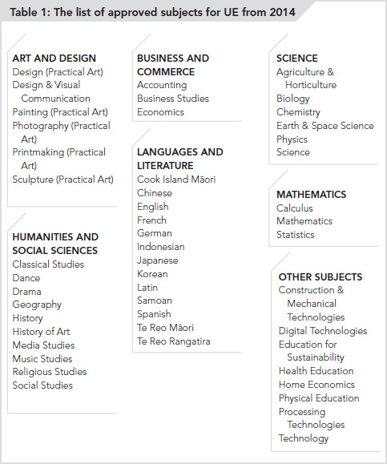

NCEA is a national school leaver qualification that fits within the larger New Zealand Qualifications Framework. Most of the subjects offered by secondary schools in New Zealand are based on the Learning Areas in the New Zealand Curriculum (which provides a framework for what secondary schools are expected to teach). Some schools also offer unit standards in other subjects, such as business administration or animal care, that are not part of the New Zealand Curriculum but can earn credits towards both NCEA and other (non-NCEA) qualifications.
Before choosing any subject, you need to know how it will help you achieve at school and how well it will prepare you for further education or work after school.
THE ESSENTIAL THINGS YOU NEED TO KNOW ABOUT NCEA
Standards and credits
Secondary schools offer subjects made up of standards (subject components) that are assessed to meet the NCEA requirements.
Each standard carries a certain number of points or credits (typically between 2 and 6) that are awarded when you satisfy the assessment for that standard.
A subject such as Level 1 English might be made up of anywhere from 4 or 5 to 10 or more standards, which can allow you to earn as many as 24 or more credits. For example, a standard might require that you produce examples of formal writing such as a job application, and carry 3 credits; another standard might require that you create and deliver a speech, and carry a further 3 credits.
If you do not submit required work or sit the required test or exam for a particular standard, you will not earn any credits for that standard, but you can still earn credits for other standards in the same subject.
Don’t be tempted to skip standards that carry only 2 or 3 credits; the content could be very important.
Schools usually offer two types of standards: achievement standards, which come from the New Zealand Curriculum (in subjects such as history, chemistry, maths, or English), and unit standards, which usually come from other qualifications such as hospitality, technology, or business administration.
Assessment and grades
• In place of traditional A, B, C, D grades, NCEA credits are awarded as Not Achieved (N), Achieved (A), Merit (M) or Excellence (E). Achievement standards are assessed using all four grades. In most cases unit standards are assessed using only the Achieved and Not Achieved grades.
• Some assessments (including all unit standard assessments) are done internally, during the school year, by the teachers teaching the subjects. Other assessments are done externally (through exams or portfolios), at the end of the school year, by specially appointed examiners. Subjects are often made up of a combination of internally and externally assessed standards, allowing students to earn some credits during the year and additional credits through end-of-year external assessments.
• If a student fails to achieve a standard or a set of standards that are internally assessed, there is usually one further opportunity to resubmit written work or be reassessed for it. For externally assessed standards there is only one opportunity to achieve the standard—at the end of the school year. (A second attempt would have to wait until the end of the following year.)
Ensuring the system works fairly
NCEA is managed by the New Zealand Qualifications Authority (NZQA), which also approves and monitors other qualifications on the New Zealand Qualifications Framework. NZQA ensures that schools maintain similar standards of internal assessment, by a process called moderation. This involves a sample of students’ work already assessed by a teacher being sent for assessment by an external teacher (a moderator) so that standards of assessment across different schools can be compared. Feedback is provided so that, if necessary, teachers can adjust their marking criteria for future use to indicate results that are similar to those provided by teachers from most other schools.
Achieving NCEA Level 1
Most students start to study for NCEA in Year 11 (5th form in the old system), although it is possible to start in Year 10 or even earlier, especially in areas such as music performance, te reo Māori or other languages in which a student is achieving well already.
IT IS UP TO YOU TO DECIDE HOW HARD YOU WANT TO WORK AND WHICH ASSESSMENTS YOU WANT TO ATTEMPT.
In Year 11 you will be required to take five or six subjects. This depends on the school and the school timetable. English (or te reo Māori) and maths (or pāngarau) are compulsory in almost all schools at this level. Some schools add a third compulsory subject. Usually it is science, but it might be physical education or another subject.
You are free to choose the remaining subjects, but your choice might be restricted by which subjects are available in your school, how the timetable is organised, and how well you have done on various tests and assessments the previous year. Potentially, you will be given the opportunity to earn 120 or more credits across five or six subjects. It is up to you to decide how hard you want to work and which assessments you want to attempt.
To gain NCEA Level 1 you will need to earn:
• a total of at least 80 credits, including
• at least 10 credits showing literacy skills
• at least 10 credits showing numeracy skills
Literacy credits are intended to demonstrate your reading, writing, speaking and listening skills. They can be earned through either:
• Specified Achievement Standards available through a range of subjects (such as English, te reo Māori, history, or social studies), OR
• Specified Unit Standards. These come as a package of three standards, together worth 10 credits, and all three must be completed successfully to meet the literacy requirement.
Note that you have to meet the literacy requirements through either specified Achievement Standards or the specified Unit Standards, but not a mix of the two.
There is one further way to meet the literacy requirements and that is through a special Level 4 subject called English for Academic Purposes. This subject is made up of two Unit Standards each worth five credits. Students taking this option may choose to achieve both reading and writing credits through this subject, or to achieve only reading or writing this way and to achieve the other part through specified Achievement Standards.
Numeracy credits are intended to demonstrate your number, measurement, and statistical skills. They can be earned through either:
• Specified Achievement Standards available through a range of subjects (such as maths, pāngarau, geography, or science), OR
• Specified Unit Standards. These come as a package of three standards, together worth 10 credits, and all three must be completed successfully to meet the numeracy requirement.
Note that you have to meet the numeracy requirements through either specified Achievement Standards or the specified Unit Standards, but not a mix of the two.
Your school will help to ensure that you are enrolled in appropriate standards to achieve the literacy and numeracy requirements. You can also check the full list of these on the NZQA website (http://www.nzqa.govt.nz/qualifications-standards/qualifications/ncea).
EACH YEAR OF STUDY PROVIDES THE FOUNDATION FOR THE NEXT YEAR’S WORK
Most students should aim to complete NCEA Level 1 in Year 11, and to complete more than the minimum 80 credits, especially if they are aiming to go on to tertiary education. However, the flexibility of NCEA allows students to take Level 1 subjects in Years 12 and 13, and some students might need the extra time. You do not have to complete NCEA Level 1 to be allowed to take Level 2 subjects and complete NCEA Level 2, but it is better if you do. Conversely, you could take some higher-level standards in Year 11, especially if you are doing well in particular subjects and your teachers think you are ready for more advanced study.
Overall, each year of study provides the foundation for the next year’s work, and it is much easier to do well if you have a solid foundation on which to build at each new level of learning. In Appendix 1, at the end of the book, we have included a flow chart that shows how subjects in earlier years connect to what students can do in later years. The flow charts come from one school and are provided as an example only. Your school will have similar charts (usually included in a Curriculum Guide or NCEA Subject Handbook) that will list all the subjects available at your school and show how specific subjects are connected from Years 10 or 11 through to Year 13.
Achieving NCEA Level 2
In most schools in Year 12 you will be required to take English (or te reo Māori). Many schools require their students to also take maths (or pāngarau) at this level. The choice of the optional three or four subjects is very important at this point. Level 1 maths and science serve as prerequisites for subjects such as statistics, physics, chemistry and biology. Good performance in Level 1 English can also act as a prerequisite for subjects such as drama, media studies or social studies. But prerequisites become stricter for Level 3, so you need to think carefully about the subjects you might like to take in Year 12, and also whether these subjects will allow you to study what you might want (or need) to study in Year 13. (See Appendix 2 for further details about specific standards that are important for progression to higher-level studies.)
To gain NCEA Level 2 you will need to earn:
• at least 60 credits at Level 2 or above, and another 20 credits at any other level (these 20 credits can come from already-earned Level 1 credits).
• From 2013, you must also meet the Level 1 literacy and numeracy requirements.
Although it might seem that NCEA Level 2 is easier to achieve than Level 1 (because fewer credits are required), the material you will be studying will be at a higher academic level, so you will need to step up to the challenge. Again, making the most of what you are able to learn at Level 2 will help you to be well prepared for the following year. Note that you might be able to progress to NCEA Level 2 study, even if you did not achieve NCEA Level 1 the previous year. But, if you did not achieve the literacy or numeracy requirements you will need to do so before you can be awarded NCEA Level 2.
Remember that this is the minimum requirement. Most students can, and do, earn more than 60 Level 2 credits. This is important for two reasons:
• You are required to take five or six subjects, each with 20 or more credits, so you should be making the most of the opportunities to learn as much as you can in each of these subjects.
• You need to make sure that you achieve enough credits in each subject to meet the “subject pass” or prerequisite rule at your school, so that you are able to study these subjects at a more advanced level in Year 13. Schools usually require at least 12, and often as many as 16 to 18 credits, for a subject pass at this level.
If you are thinking about going to university when you leave school, instead of relying on the already-earned Level 1 credits, you should be aiming to achieve at least 80 or more Level 2 credits.
Achieving NCEA Level 3
In Year 13 you will be free to choose all your subjects, but remember that your choices will be limited by the prerequisites you have completed in previous years. If you are aiming to go to university, check carefully which subjects are required for the programme you wish to study. Also, make sure that the subjects you take count not only towards NCEA Level 3 but also towards the UE award.
To gain NCEA Level 3 you will need to earn:
• at least 60 credits at Level 3 or above, and another 20 credits at Level 2 or higher (these 20 credits can come from already-earned Level 2 credits).
Any NCEA Level 3 subjects (and some non-NCEA Level 3 subjects1) can contribute credits toward the NCEA Level 3 qualification, but not all Level 3 subjects count towards UE.
A FEW OTHER THINGS YOU NEED TO KNOW ABOUT NCEA
NCEA is designed to meet the learning needs of all students in many different subjects and with varying interests and levels of ability. Each student’s Record of Achievement will document the knowledge and skills attained and the credits earned in the process. Every achievement (and every recorded credit) counts and will show on your Record of Achievement.
Why is achieving NCEA important?
All students should be able to leave school with useful knowledge and skills, preferably with a formal qualification. NCEA Level 1 is the minimum school leaving qualification, although current policy is that the majority of students should leave school with at least NCEA Level 2. Achieving an NCEA qualification is important for many reasons. Here are some of the most important:
• Students who move from school to the workforce with an NCEA qualification have a higher chance of getting a job and being paid a higher wage than those who leave without a qualification. How much a person can earn is closely related to their level of education.
• Students who wish to take up an apprenticeship are usually required to have achieved certain levels of literacy and numeracy as well as other skills (see Chapter 5 for some examples). Those with an NCEA Level 2 qualification are much more likely to complete their apprenticeships and become qualified builders, motor mechanics, plumbers, etc. than those without this qualification.
• Students who want to complete certificate or diploma courses (in technology, business, landscape gardening, aged care or other fields) through industry training organisations, polytechnics or other training providers are generally expected to have completed NCEA Level 2, or a significant number of credits toward NCEA Level 2, particularly in literacy and numeracy.
• Entry to degree-level studies at polytechnics usually requires UE or NCEA Level 3. Where the requirements for entry are less demanding (e.g., for diploma courses), strong performance at NCEA Level 2 is expected.
• Entry to university degree-level programmes requires a minimum of UE and a significant number of credits in subjects on the approved list (see Chapters 2, 3 and 4 for examples). In fact, some universities are now using a point system to rank students for selection into specific degree programmes. The points are usually calculated on the basis of Level 3 approved subjects, with extra points for credits achieved with Merit or Excellence (see Jack’s story in Chapter 4 for an example of how the point system might work).
Although some students will settle for the minimum effort needed to achieve their NCEA qualifications (or less), many more students will be keen to do their best and achieve as much as possible. NCEA rewards hard work and academic achievement through course and certificate endorsements. Students who achieve credits with Merit or Excellence may qualify for endorsement.
Course endorsement
Course endorsement (e.g., in te reo Māori, chemistry or French) requires that a student achieve at least 14 credits in that subject with Merit or Excellence. At least 3 of the 14 credits must come from internal assessment and at least 3 credits from external assessment (except in the case of physical education, religious studies and Level 3 visual arts). The credits can come from more than one NCEA Level, but they must all be earned in the same school year.
For example, a student who achieves 20 credits in Level 2 chemistry (4 from internal and 16 from external assessments), 15 of which are achieved with Excellence, will gain endorsement in chemistry “with Excellence”. Another student, with the same number of credits and proportions of internal and external assessment, but who achieves 10 credits with Merit and 4 with Excellence (some of these credits at Level 1 and others at Level 2), will gain endorsement in chemistry “with Merit”.
Check with your school that the subjects you are taking, and hope to achieve with Merit or Excellence, have been structured so that they are eligible for endorsement.
Certificate endorsement
Certificate endorsement (at NCEA Levels 1, 2 or 3) requires that a student achieve at least 50 credits towards a certificate with Merit or Excellence. For example, a student completing NCEA Level 2 who achieves a total of 96 Level 2 credits, 52 of which are with Excellence, will be awarded NCEA Level 2 “with Excellence”. A student who achieves 64 Level 2 credits, 20 of them with Excellence and 31 with Merit, will be awarded NCEA Level 2 “with Merit”.
WHAT YOU NEED TO KNOW ABOUT THE UNIVERSITY ENTRANCE AWARD
To achieve University Entrance (UE), usually in Year 13, you will need to meet a different set of requirements than for NCEA Level 3. Not all NCEA Level 3 subjects count towards UE. The ones that do are on the approved list of subjects, as shown in Table 1 below.2 And just to make things even more complicated, not all standards within the approved list of subjects count towards UE, so check with your school that the standards being offered do count.
Achieving UE from 2014
To achieve UE students are required to:
• achieve NCEA Level 3 (i.e., at least 60 credits at Level 3 or above and 20 credits at Level 2 or above, including Level 2 credits completed in previous years)
• achieve at least 14 credits in each of at least three subjects on the approved list (i.e., at least 42 credits from the three subjects)—these credits are part of the 60 credits required for NCEA Level 3
• meet the literacy requirement of at least 10 credits in English, te reo Māori, or other specified achievement or unit standards at Level 2 or above (5 of which must be in reading/panui and 5 in writing/tuhituhi)
• meet the numeracy requirement of at least 10 credits at Level 1 or above in mathematics, pāngarau, or other specified achievement or unit standards (the numeracy requirement for UE is the same as the numeracy requirement for NCEA Level 1).

Students with a strong academic record at school (Merit and Excellence endorsements) tend to do better at university than students who did less well at school. So you should make the most of your final year at school and gain NCEA Level 3 and UE, with as many Merits and Excellences as possible!
It is important you make sure that the subjects you are taking at Level 3, and expect to be counted towards UE, are on the approved list, and that the majority (if not all) the standards within these subjects are also included on the approved list. Similarly, if you are aiming for course and certificate endorsements, make sure that the courses you are taking are eligible for endorsement.
WHAT YOU NEED TO KNOW ABOUT THE NEW ZEALAND SCHOLARSHIP AWARD
There is one additional level of academic award available to senior high school students, called the New Zealand Scholarship award. This award is given to students who can show very high levels of achievement in individual subjects. Students are assessed on the basis of external end-of-year examinations or portfolios (covering the same content but separate from external assessments for NCEA), and carry a monetary reward which is available only when the student enrols in tertiary study in New Zealand. Scholarships are awarded at the basic Scholarship (S) level, or the Outstanding (O) level.
STUDENTS WITH A STRONG ACADEMIC RECORD AT SCHOOL (MERIT AND EXCELLENCE GRADES) ALSO TEND TO DO BETTER AT UNIVERSITY THAN STUDENTS WHO DID LESS WELL AT SCHOOL
Scholarship awards (and their 2012 monetary values) are as follows:
• Single Subject Award: $500 (one-off)—for one subject (or $1,000 for achievement in two Scholarship subjects). In 2012, 2038 students received this award.
• Scholarship Award: $2,000 per year for 3 years, as long as the student maintains at least a B grade average in tertiary studies—for achievement in three or more Scholarship subjects. In 2012, 224 students received this award.
• Top Subject Scholarship Award: $2,000 per year for 3 years, as long as the student maintains at least a B grade average in tertiary studies—for achieving the highest marks in a subject. In 2012 there were 33 Top Subject Scholarship winners.
• Outstanding Scholar Award: $5,000 per year for 3 years, as long as the student maintains at least a B grade average in tertiary studies—for achieving at least two subject Scholarships at O level and at least one at S level, or one at O level and at least four at S level. The number of students who receive this award is restricted, and achieving the minimum number of S and O levels does not guarantee an award. Between 40 and 60 students across New Zealand achieve this award each year. In 2012 there were 54 winners.
• Premier Award: $10,000 per year for 3 years, as long as the student maintains at least a B grade average in tertiary studies—for achieving five or more Scholarships with at least three at O level. The number of students who receive this award is restricted, and achieving the minimum number of S and O levels does not guarantee an award. Between five and 10 Premier Awards are given out each year. In 2012 there were 10 winners.
Sitting Scholarship exams is recommended for students who have a strong record of academic excellence in one or more subjects. Winning one of the Scholarship awards is not only financially rewarding, but is also recognition of a student’s academic ability and willingness to respond to a challenge. In some degree programmes, a Scholarship award in a subject can gain direct entry to second-year study in that subject.
Discuss your plans to sit Scholarship exams with your subject teachers so that they will be aware of your need to prepare for them and will help you with additional tutoring or trial runs. It is to your advantage to attempt at least three Scholarship exams, because achievement in two subjects carries a once-off award of $1,000, whereas achievement in three subjects is worth a total of $6,000 (over 3 years).
A note of clarification: New Zealand Scholarship awards should not be confused with other grants and scholarships available to students going on to tertiary studies. Many charitable organisations, community trusts, and business and service organisations offer financial assistance in the form of scholarships to students who apply for them. Universities also administer a range of scholarships and provide some of their own.
Such scholarships are often targeted at specific categories of students (e.g., women, those who come from a specific geographical area or who attended specified schools) and might be linked to specific areas of study (e.g., arts, music, engineering). Scholarships are awarded on the basis of academic achievement and other qualities, including leadership and community contribution. Some are linked to financial need. Your school and the university you plan to attend will be able to give you more information about the scholarships for which you can apply.
1 As already mentioned, school subjects with achievement standards are part of the secondary schools curriculum. Other subjects can come from other certificate or diploma qualifications on the New Zealand Qualifications Framework. Such subjects might include workshop skills, animal care or business administration, and there are many others.
2 As listed on the NZQA website on 5 June 2013. For changes and updates, check at http://www.nzqa.govt.nz/qualifications-standards/awards/university-entrance/approved-subjects/